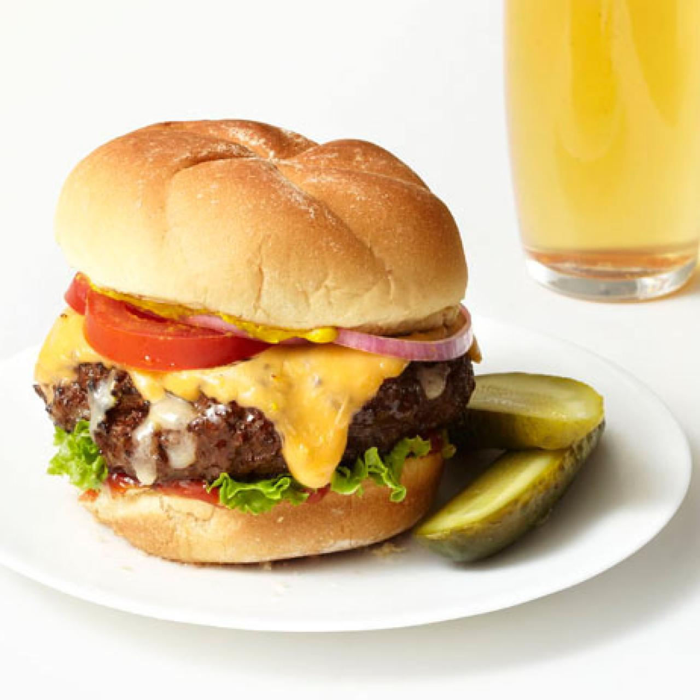

Cheeseburger Recipe

Description
The cheeseburger is a favorite of mine. It has rich flavors and great texture.
It is a staple in the United States and can be found in almost any restaurant.
The cheeseburger is best served with a side of fries or chips, but can be served with almost anything.
Salads and onion rings are also popular options for sides. It can be cooked in a pan/griddle or on a grill.
Ingredients
- Ground Beef
- Cheese of Choice (American Recommended)
- Bun of Choice (Brioche Recommended)
- Lettuce
- Tomato
- Onion
- Pickle
Instructions
- Form the Patty - Depending on the desired size of burger,
take a chunk of ground beef and shape it into a round flat patty.
- Season Patty - Recommend testing different seasonings to find what you like.
I use Lowry's.
- Slice Tomato
- Slice Onion
- Chop Lettuce
- Turn on Grill - Turn grill on high and wait until grill is to at least 500 F
- Grill Patty - Grill patty on one side for about 7 minutes and flip. Do other side for another 7 minutes
- Put Cheese on Patty - Put cheese on patty while it is still on the grill and take off once the cheese starts to melt.
- Put Rest of Toppings On - Put your bun of choice on a plate and put your patty with cheese on the bottom bun.
Add tomato, lettuce, onion, and pickle to the top bun. Optional - Add a sauce of choice.
Enjoy